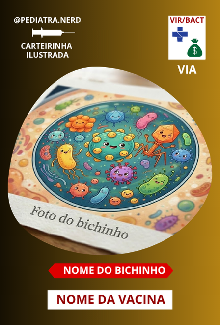

Carteirinha Digital de Vacinas
Carregando...
"A vacinação é um pacto coletivo de erradicação das doenças."
Cadastre o bebê
Na aba Registro, informe o nome e a data de nascimento. O app calcula automaticamente quais vacinas estão em dia, pendentes ou atrasadas.
Acompanhe o calendário e registre a aplicação
Na aba SUS você encontra todas as vacinas gratuitas do SUS organizadas por idade. Toque no círculo ao lado de cada vacina para registrar a aplicação.
Explore as vacinas privadas
Na aba Privadas você encontra imunizantes complementares ao SUS, com botão para comparar as opções.
Saiba mais sobre cada vacina
Toque no botão ℹ ao lado de qualquer vacina para ver informações detalhadas: o que protege, via de administração, doses e possíveis efeitos adversos. Tire dúvidas na aba Dúvidas.

Cada figurinha representa o microrganismo combatido pela vacina.
As siglas indicam a via de administração:
IM = Intramuscular · SC = Subcutânea ·
ID = Intradérmica · VO = Via Oral
Aplicada
No prazo — vacine em breve
Atrasada — agende já
Pendente — ainda não é a hora
Sempre consulte seu pediatra para decisões sobre vacinação.
Principais dúvidas
Respostas baseadas nas recomendações do Ministério da Saúde, SBP e SBIm.
Ministério da Saúde — Programa Nacional de Imunizações (PNI)
Sociedade Brasileira de Imunizações (SBIm)
Sociedade Brasileira de Pediatria (SBP)
Manual de Imunobiológicos — CRIE